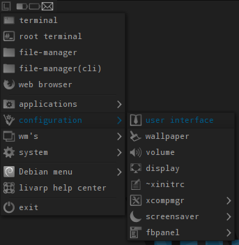
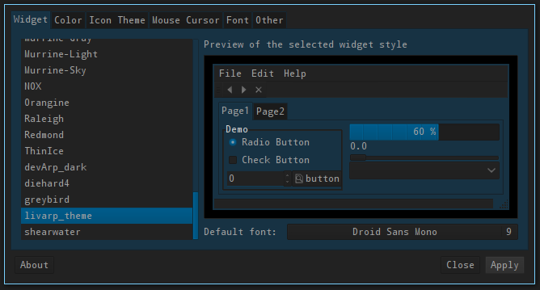
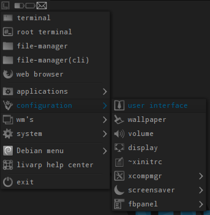
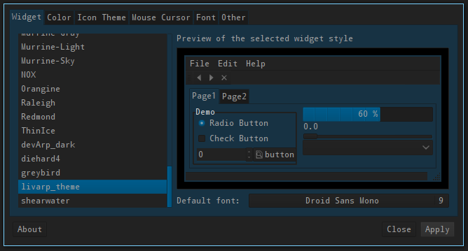

lang fr|gb
user interface
the user interface is configured by lxappearance. a menu entry is present in each livarp session, allowing you to choose your GTK theme, your police and your icon theme.



the user interface is configured by lxappearance. a menu entry is present in each livarp session, allowing you to choose your GTK theme, your police and your icon theme.

